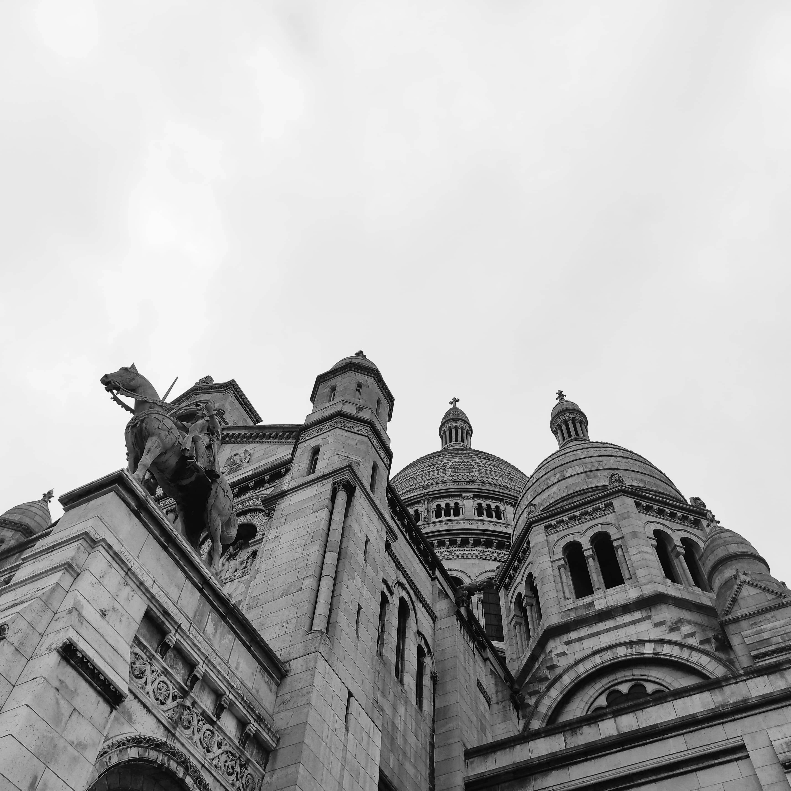

The new year has started with a trip to Paris after twelve years since the last time I visited it. It was one of the few times I went there purely as a visitor, since in the past I lived in the city in different stages of my life, first in 2006, living out of temporary evening jobs, going to bed late at night and waking up early in the morning to attend the "Verlaine language school" on the other side of the city, in the beautiful and friendly Butte aux Cailles. Back then Père Lachaise was my first parisian headquarter and the hang outs at night in the 20 arrondissement when I was occasionally free from work are still marked in my memories.
After I left the city six months after, I moved back to Paris again in 2012, this time for different reasons while writing my dissertation on George Orwell, feeling like my life had so much in common with the one of the author of Down and Out in Paris and London (1933). Back those days I was working as a nightwatcher in a luxurious hotel near the place the Clichy and I was living in the Batignolles area. Once all the check-ins were done and the service was ready for the day after, I enjoyed reading Celine and falling asleep watching National Geographic while at work.
During this last visit I stayed in the studio flat of a friend in Montparnasse, sleeping on her couch between various kind of art-works, mostly sculptures. In the meantime my interests have changed a little.
Is the beauty and the stillness of nature also a filter to apply to our own inner ecosystem or must nature be purely represented the way it is shown? Monet les Nymphéas is one of his masterpieces and probably the one that more than any other painting tries to answer the question. The series of paintings is characterized by the number (250 pieces) and the size of the paintings. Monet is one of the most famous painters of his generation and Impressionism was named because of one of his paintings (Impression, soleil levant 1872 musée Marmottan Monet). The works were made while the painter suffered from cataracts, affecting the perception of light and the colors and therefore the perception of the outside world. In fact, one of Monet's ambition in relation to the countryside was to capture the changing of light and the change of time.
One of the most common features that distinguished Cezanne and Renoir was how they deal with shape. While the first was more rigorous in his works preferring a more geometric approach, the second focus more around harmony, preferring round shapes. Cezanne is considered a post-impressionist painter, a movement that tries to distance itself from impressionism, disregarding the emphasis on nature and preferring a more symbolic/abstract vision. Post-impressionism can also be seen as an extension of impressionism and a movement that led towards Cubism. Cezanne himself was seen as an innovator who contributed in taking painting towards avantgarde according to some of the most relevant painters of the XIX/XX century like Matisse or Picasso.
Renoir’s paintings are maybe mostly associated with the feminine figure and the lifestyle of a very vibrant Paris in the second half of the XIX century. Dance at Le Moulin de la Galette (1876, musée d’Orsay) is one of the pictures that I personally associate most with the city of Paris, the Belle Epoque and the pleasure of living those days.
Paul Guillaume was an inexperienced art dealer born in Paris and raised in a modest background. His interest for african art and sculpture started when he accidentally came across an african art statue inspecting a shipment of rubber from tyres and it is one of the things that distinguished him the most between art dealers, placing african art into modernism.

Modigliani was an italian/sephardic jewish sculptor born from a wealthy family who soon fell into bankruptcy in Livorno. His interests towards painture and the avantgarde brought him to Paris in 1906 where he started to squat in a commune in Montmartre. Between the main things that brought together Guillaume and Modigliani there is a common interest from african art that probably led Guillaume to suggest his friend to focus more on painture rather than sculpture. Eventually Guillaume will become Modigliani art dealer helping him to reach a certain success but the interest was reciprocal and can be seen in some of Modigliani’s Guillaume portraits, where he defines his friend as “novo pilota”. Modigliani, despite being a heavy drinker, suffered from tuberculosis from a young age and had health issues during most of his life which affected his artwork and the way he sees life.
Boris Vian, a parisian musician, poet, writer and actor was a clear reference for Lucien Ginsburg aka Serge, one of the french biggest personality in the history of french music, who mostly took inspiration from french poetry and classical music (mainly Chopin) of the XIX century and bring all his art, his savoir-faire and his rebellious, self-destructive character to a more popular level. Vian, as musician, was very much inspired by jazz music and so was Gainsbourg. Les feuilles mortes, a french song written by Prévert and Kosma, subsequently taken to a huge success as standard jazz (thanks to Yves Montant) is another clear indicator of how french poetry and jazz music were going along the same path during this time. Gainsbourg was eternally inspired by Prévert and wrote La Chanson de Prévert clearly referring to the melancholic souvenir and the warm colors of the autumn leaves.

Going back in time, french symbolism, a movement that rejected naturalism and realism towards a more symbolic, imaginative, spiritual approach with the poetes maudits Paul Verlaine and Stéphane Mallarmé as two of the most important figures, was also a main reference for Gainsbarre and one of his greatest success. Je suis venu te dire que je m’en vais was written following the sanglots long and the vent mauvais of his predecessor.
Java is a dance of Bal-musette (a bellow-blowns bagpipe) that became famous in Paris at the beginning of the XIX century. The style was adopted between Parisians and immigrants that settled in the Auvergnat bars in Paris (XIX arrondissement). In particular the style takes its influences from the italian mazurka who was seen as a form of popular dance that distanced itself from more elitist forms of dance like walz. Bal-musette was also relevant for the development of other forms of music like swing-jazz.
L'Age d’Or or Nouvelle Époque was a period of economic, cultural, intellectual and technological prosperity that affected French society at the end of the XIX century, partially a consequence of the II industrial revolution. The artistic production was rising during those years and painters like Claude Monet reached the peak of their celebrity during the Belle Epoque. Also Paul Cezanne experienced an artistic transition during these years, switching from the more traditional peinture en plein-air to a more geometrical/symbolic approach. The dominant movement in this period is what has been named as Art Nouveau, a movement that was applied to architecture, design and many other aspects of the daily life and that put emphasis on decoration and attention to details, for filling spaces rather than leave them empty. Art Nouveau also implied a lot of influences from nature and organic shapes, through the extensive use of curves and floral patterns. The style widespread in Europe and had different names according to the country and nowadays it is possible to find Art Nouveau buildings in places like Lithuania or Georgia.

Apollinaire, Prévert, Hemingway, Breton, Sartre, de Beauvoir and the poetes maudits are only some of the artists who attended les Deux Magots during the years. The place switched from surrealism to existentialism and was seen as the center of parisian cultural life in the XX century.
The concept of Flâneur as a city wanderer, as somebody who the only aim is to gain awareness of what surrounds him, is something brought up for the first by Charles Baudelaire. The concept is a sort of an ode to the movement, to walking, to the one who sees life as a sort of constant pilgrimage made in order to trascend the reality and understand the eternity. I bet in a certain way a flâneur can be seen as the artist himself. Kipling use to say that there are two kind of people in the world, those that stay at home and those that do not, those who belong to a certain place and those that are homeless but they feel at home everywhere and definitely Baudelaire's flâneur belongs to the second category.
While living in Paris back in 2012, I had the chance to spend a couple of days in the city with my father and during a walk through the city center, we came across a street exhibition from the artist Bruno Catalano called Les Voyageurs. The exhibition was made of a series of bronze statues, mostly representing human beings moving forward, walking towards a new place in life, holding a suitcase with a consistent part of their body completely missing (mostly the area around the chest and the abdomen). According to the artist, the idea behind is to represent migrants of every kind that once that leave a certain place to move to the next destination, inevitably lose something on the way and although this part of them seems to be forever gone, it somehow sticks with them eternally. 13 years after my first encounter in Paris, I casually saw the same exhibition, this time in Manhattan. Seeing it again brought back memories of the parisian times with my father and for a moment I somehow felt like one of those empty, humble travelers (maybe like Le Gran van Gogh, the one that seems to be the most famous piece of exhibition), that despite the years and the countless number of things I have lost in life, still stands on the way, facing ahead, eager to "moving forward" no matter where.